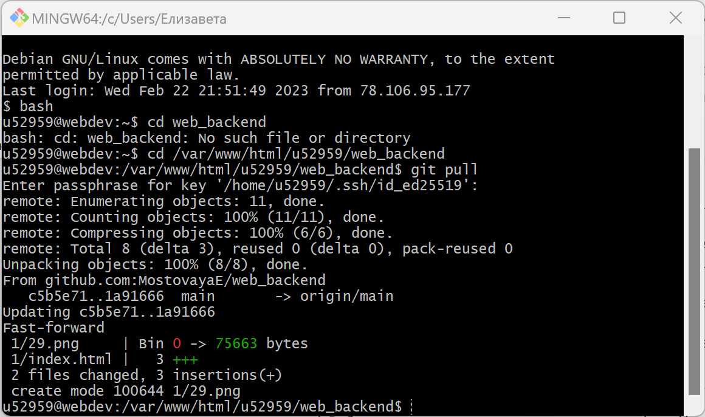

В командную строку вводим команду ssh, логин, пароль, чтобы подключиться к учебному серверу.

Вводим команду bash, которая даёт пользователю систему команд для работы с файлами, папками.

Вводим команду ping, которая позволяет проверить качество подключения к серверу или другому компьютеру на уровне IP


nslookup используется для получения из доменной системы имён доменного имени, IP-адреса или другой информации из записей DNS.
Запись A позволяет узнать IP адрес.
Запись MX хранит соответствие доменного имени почтовому серверу этого домена.


Команда whois используется для получения регистрационных данных о владельцах доменных имён, IP адресов и автономных систем.

С помощью команды cd перемещаемся в нужный каталог. Используем команду git clone для создания репозитория.
Используем команду git pull для добавления файлов из репозитория github на удалённый сервер.

С помощью программы FileZillа соединяемся с учебным сервером с моим логином и паролем по протоколу FTP и копируем на локальный компьютер файлы задания из каталога /var/www/html/мой_логин/.